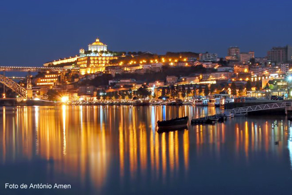
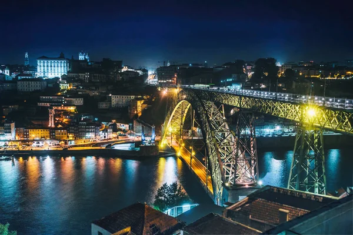
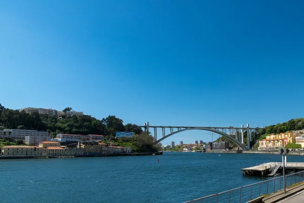

place Pontos de interesse
- Torre dos Clérigos
- Livraria Lello
- Ribeira
- Palácio da Bolsa
- Sé do Porto
- Ponte Dom Luís I
- Caves do Vinho do Porto
- Casa da Música
- Jardins do Palácio de Cristal
- Mercado do Bolhão
restaurant Top 5 restaurantes
- Restaurante D. Maria
- Taberna da Ribeira
- Restaurante Café Majestic
- Restaurante O Porto dos Gatos
- Restaurante Cantinho do Avillez
account_balance Top 5 monumentos
location_on Locais a não perder
- Ribeira do Porto
- Caves do Vinho do Porto
- Jardins do Palácio de Cristal
- Livraria Lello
- Casa da Música
- Mercado do Bolhão
- Ponte da Arrábida
- Estação de São Bento
- Praia de Matosinhos
- Foz do Douro
photo_camera Melhor local para tirar foto
date_range Melhor altura para visitar
| calendar_today Mês | star Cotação (1-10) |
| Janeiro | 5 / 10 |
| Fevereiro | 6 / 10 |
| Março | 7 / 10 |
| Abril | 8 / 10 |
| Maio | 9 / 10 |
| Junho | 10 / 10 |
| Julho | 9 / 10 |
| Agosto | 8 / 10 |
| Setembro | 9 / 10 |
| Outubro | 8 / 10 |
| Novembro | 6 / 10 |
| Dezembro | 7 / 10 |